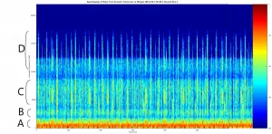
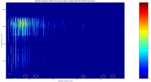
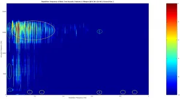
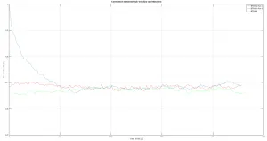
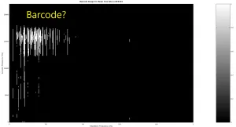

CMDR Maligno once again brings us a research paper on the acoustic features of the Brain Trees.
One of the more notable characteristics of Brain Tree sites [1] is the pervasive acoustic signal, which can be heard immediately after dipping below an altitude of approximately 450m above ground level. The exact altitude varies from site to site, but the signal threshold follows almost a step-function or hard sigmoid function because the distance over which it fades is only a meter or two. The primary purpose of this study is purely phenomenological: to describe and characterize the signal. The secondary purpose is to attempt to find any correlations between the signal and certain relevant parameters, such as celestial body properties and material abundances. The acoustic signal is of interest to the exploration community because it might provide further proof of a connection to The Guardians [2] and Ancient Ruins [3].
The natural first step in characterizing the signal is to look at the spectrogram. Figure 1 shows a spectrogram of the site BT0192 [4] acoustic signal. The intensity of acoustic features is shown in a log scale with a dynamic range of 40 dB. Data acquisition was carried out by first landing the science vessel in the outskirts of the Brain Tree site and within range of the acoustic signal. Acoustic data was recorded over a period of 600 seconds to help ensure that acoustic features that take tens of seconds to repeat appear multiple times. It should be noted that the spectrogram was generated with by taking spectral slices every 5 milliseconds and an amplitude weighting window of 5 milliseconds.

There are number of things to note about the spectrogram. Some components of the signal (henceforth referred to as acoustic features) have an acoustic frequency as high as 18 kHz. Furthermore, some features are spread over several kHz. For ease of discussion, the features are categorized as part of four distinct classes, depending on acoustic frequency; category A: frequency less than 1.5 kHz, category B: frequency between 2.0 and 3.5 kHz, category C: frequency between 3.5 and 9.5 kHz, and category D: frequency higher than 10 kHz. It is very evident from the spectrogram that the acoustic features have a repetition frequency, some higher than others. For instance, category A features seem to have a repetition frequency of several times every ten seconds, while category D features repeat roughly every 25 seconds.
Since there is a clear periodicity in the acoustic features, it is useful to conduct Fourier analysis of their repetition frequency. In this study, this is carried out by taking a Fourier transform along the horizontal axis of the spectrogram. The input to the Fourier transform is precisely the data in the spectrogram above: the log (10*log10) of the absolute value of the signal intensity. Since we are starting with a real (i.e. not complex) signal the FFT will generate two identical sidebands, of which we are only keeping one. It should also be noted that because our total data acquisition period is 600 seconds, the repetition frequency resolution is 0.00167 Hz, which is desired in order to differentiate repetition frequencies less than 1 Hz.

Figure 2 shows the acoustic frequency as a function of feature repetition frequency. The plot consists of the log (10*log10) of the signal intensity, with a 10 dB dynamic range. Since we learned from the spectrogram that acoustic features don’t repeat more than a few times every 10 seconds, the figure is restricted to a repetition frequency of less than 1 Hz.
The first thing to note here is that acoustic features exhibit specific repetition frequencies. For instance, category A features tend to have repetition frequencies (circled in yellow) of 0.16, 0.24, 0.65, 0.82, and 0.90 Hz. The 0.65 Hz repetition frequency is relatively strong and is consistent with the earlier observation that category A features seem to repeat 6 or 7 times in a ten second period. Categories B, C, and D have their own set of repetition frequencies, with the latter having the strongest signal. A strong signal is indicative of the “quality” of the repetition pattern: the more obvious the pattern in the original spectrogram the stronger the signal appears.
At this point in the analysis one may wonder what these repetition frequencies might mean. Since they are all less than 1 Hz, it’s possible that they represent fractions of 1. This could be an interesting possibility because many parameters encountered and used by commanders are fractions of 1. In particular, some of the characteristics of a celestial body are expressed that way, namely material abundances. However, a careful comparison of the frequencies shown in the plot do not match the material abundances of the body associated with BT0192, or any of the other properties of that body.

There is a further complication to the observations. A second data taking run was carried out in the BT0192 site, which yielded the plot shown in figure 3. Although the plots are similar, there are some significant differences, namely the repetition frequencies of category D features. Only category A repetition frequencies appear to be unchanged as well as a few others in the higher categories circled in green. The ones circled in orange seem to show the highest variability. Nine other sites where investigated (and not included here for the sake of brevity) and they all show similar spectral characteristics that vary over time.
The observations made can be the result of three different scenarios: 1) that the observed repetition frequencies encode something that is not static but something cyclical, like the ticking’s of a clock, 2) something non-cyclical, such as solar wind conditions or maybe an “Epoch” clock [5], or 3) something that appears to have order but is fundamentally meaningless, e.g. “someone just left the music on for no reason”.
In order to test the first of the possibilities enumerated above, one can look at the correlation of the signal with itself as a function of time and see if there’s any obvious cyclical to the signal. This was carried out by dividing the data collection period into sub-windows of 150 seconds in length (150 was picked because it retained most of the repetition frequency resolution while allowing a good number of sub-divisions). The correlation between the first sub-window, which serves as the basis of comparison, and another sub-window with a small time shift was plotted as a function of total time shift. The correlation matrix between two sub-windows was computed using standard techniques [6], and a correlation metric was obtained by normalizing the sum of the diagonal elements. In other words, a correlation metric of 1 means a perfect match, and 0 totally different underlying signals.

Figure 4 shows the correlation metric for the first data-set acquired in site BT0192. Again, the first 150 seconds of data comprise the fiducial sub-window that will be the basis for all other comparisons in these series of tests. As expected, the underlying signals are fully correlated at the start and eventually decorrelate. Since the underlying signals are not random noise, there isn’t full decorrelation to 0. The correlation metric bottoms out between 0.6 and 0.7, which is consistent with there being some level of repetition in the underlying signal, such as the persistent repetition frequencies of the category A features and a few others.
The correlation metric does not go back up to 1 by the end of the full collection period. This could mean that the baseline signal is not repeated ever again or perhaps it is much further down the line. The correlation metric for the second data collection period in site BT0192 and a separate data collection in site BT0198 are also plotted. The correlation metric for the other data collections seems to be only at the same “bottom” level as the first one. A future experiment might be arranged with a collection period of several hours. Another experiment can consist of recording the Brain Tree acoustic signal at the same time of the day to see if it is the same.
It has been documented [7,8] that there is a possibility of a signal hidden in the audio from Guardian Obelisks. Some of that audio has been interpreted as representing a “barcode” of some sort. Figure 2 does have a vague resemblance to one. One can generate something that resembles a barcode by plotting a threshold image of pixels greater than -7 dB, as shown in Figure 5. It should be stressed that the mapping to a barcode is somewhat vague and would require more extensive scrutiny, which can form the basis of a future study.

Summary and Outlook
Fourier analysis has been carried out on the acoustic emissions from several Brain Tree sites. The analysis has shown that there is some underlying order to the signal, namely acoustic features having repetition frequencies less than 1 Hz. However, these repetition frequencies do not seem to correlate with the known properties of the host celestial bodies. More extensive studies will need to be conducted in order to determine the underlying meaning of the Brain Tree acoustic signal.
References
[1] CMDR Starbeaver, “Guardians Trees (Brain Trees)”
[2] Mykl Atrum, “The Guardians”
[3] Canonn Research, “New Guardian Ruins site found in Blae Eork sector”
[4] Canonn Brain Tree Data Sheet
[5] Wikipedia, “Unix time”
[6] Wikipedia, “Covariance Matrix”
[7] CMDR Ericlas, “THERE COULD BE A SIGNAL HIDDEN IN THE OBELISKS SPECTROGRAM!”
[8] CMDR Ericlas, “Obelisks transmitting Binary/Morse/…/just random noise ?”